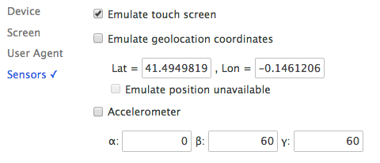
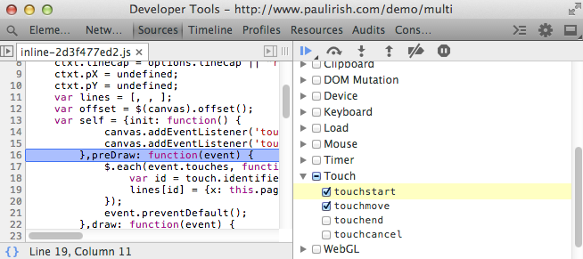

@media only screen and (min-device-width:768px)) will be enabled according to the values defined in the Resolution settings.Emulating Touch Events
Touch is an input method that's difficult to test on the desktop, since most desktops don't have touch input. Having to test on mobile can lengthen your development cycle, since every change you make needs to be pushed out to a server and then loaded on the device.
A solution to this problem is to simulate touch events on your development machine. For single-touches, the Chrome DevTools supports single touch event emulation to make it easier to debug mobile applications on the desktop.
To enable support for touch event emulation:
- Open the Emulation panel in the DevTools.
- Enable "Emulate touch screen" in the Sensors pane.

Your mouse actions will now also trigger the relevant touch events: touchstart, touchmove and touchend.
Notes
- Feature detects such as
Modernizr.touchwill now succeed on page refresh. - This feature, like many other overrides, will only work while the DevTools are open.
- The cursor will change to a small circle to emulate a fingertip size.
- Use Shift + Drag to emulate a "pinch".
- Enabling "Emulate touch screen" does not disable mouse events entirely, as they are fired on touch devices. Try this touch event listener test page, touch is another option we can debug with.
- On click, the order of events fired is currently:
touchstart > mousedown > touchmove > touchend > mouseup > click. On touch devices, this order is slightly different. The tools will shortly be updated with the right order. elem.ontouch*handlers will currently not fire with this feature. Use the--touch-eventscommand line flag to let Chrome trigger these handlers.

Debugging touch events
- Open up the Canvas Fingerpaint Demo
- Navigate to the Sources panel
- Expand the "Event Listener Breakpoints" sub-panel
- Check the "touchstart" and "touchmove" events under "Touch"
- Move your cursor over the paint area
- The debugger should successfully pause on the draw() method

You may also monitor touch events as they fire on an element in the console. Use monitorEvents from the command line API: